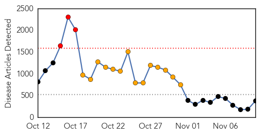

Unknown
30-Day Web Trend
0 alerts, 0 warnings

30-Day Twitter Trend
0 alerts, 0 warnings

Article Locations

Article Confidences
Top Articles:
- 0.988
- Legionnaires’ outbreak kills four in Portugal, more than 160 ill
- 0.926
- Blood-sucking ‘kissing bug’ sees 300k Americans infected with deadly disease — RT USA
- 0.923
- Shingles vaccine worth considering to avoid painful condition
- 0.917
- Chicago Tribune
- 0.917
- Chicago Tribune
- 0.917
- Chicago Tribune
- 0.917
- Chicago Tribune
- 0.917
- Chicago Tribune
- 0.866
- U.S., allies launch barrage of airstrikes against Islamic State -CENTCOM
- 0.866
- Five nuclear engineers, one of them Iranian, killed in Syria
- 0.866
- German foreign minister urges all in Ukraine conflict to respect ceasefire
- 0.866
- Bombs kill at least 10 police in east Afghanistan
- 0.848
- Deadly 'Kissing Bug' Has Infected 300,000 People in U.S.
- 0.819
- South Africa makes great progress in malaria control
- 0.792
- Pneumonia Vaccines May Have Cut Kids’ Hospital Admissions
- 0.766
- Anti-Typhoid Gene Found, May Improve Vaccines: Study
- 0.764
- Anti-typhoid gene found, may improve vaccines
- 0.761
- Health warning for Lake Hakanoa
- 0.755
- KRNV, Reno, NV
- 0.751
- Malawi Nyasa Times – Malawi breaking news in Malawi
- 0.741
- Anti-typhoid gene found, may improve vaccines – study
- 0.740
- CYANOBACTERIAL WARNING: Health warning for Lake Hakanoa
- 0.727
- Farmers Hiding African Swine Fever Infected Pigs in Zambia
- 0.719
- No Need for Cancer Watch in Cirrhotic Wilson's Disease
- 0.715
- There's a virus that makes you stupid, scientists say
- 0.702
- NBI probes DOH execs over vaccine purchase
- 0.650
- Need to spread Ayurveda all over the world: Health experts
- 0.647
- Need to spread Ayurveda all over the world: Health experts
- 0.551
- Mexico’s president slams missing student protests
- 0.551
- China and Japan in landmark talks to ease tensions
- 0.549
- Bomb blast kills dozens of school children in Nigeria
- 0.549
- Serbian, Albanian PMs in new rift over self-rule for Kosovo
- 0.549
- Egypt's Sinai jihadists vow allegiance to IS group
- 0.529
- Kenya : Borders put Kenya at high risk of polio, says WHO
- 0.515
- Have You Considered Epilepsy Surgery?
- 0.512
- Mass Sterilization Campaign: UN Laces Tetanus Vaccine With Drug to Cause Miscarriages
- 0.506
- Health dominates PA session as three bills made law
- 0.501
- Ebola nurse to remain a voice against quarantines
Top Tweets:
- 0.889
- RT: T7: Our flu and heartdisease page includes a vaccine finder – enter your zip code and go! http://t.co/SAPd42EnOC flu…
- 0.551
- PAROLES DE LA CHANSON Kandia Kora (Guinée / chant en Français) L’Afrique est pleine de tristesse De voir nos... http://t.co/LPCi7yV5m1
Ebola
30-Day Web Trend
3 alerts, 14 warnings

30-Day Twitter Trend
5 alerts, 13 warnings

Article Locations
Article Confidences

Top Articles:
- 1.000
- Governments, groups striving to become as agile as the Ebola virus
- 1.000
- New York doctor is free of Ebola
- 1.000
- Aid group calls for changing Ebola response in Liberia
- 1.000
- Latest Ebola News: Ebola prevention in Bahrain to be inspected by WHO
- 1.000
- Ebola in West Africa: Death toll reaches 4,960, total 13,268 infected
- 1.000
- Is this Ebola crisis a warning of things to come?
- 1.000
- New York doctor cured of Ebola
- 1.000
- New York doctor is free of Ebola
- 1.000
- New York doctor is free of Ebola
- 1.000
- Ebola: Patient at Royal Victoria Hospital in Belfast tests negative for virus
- 1.000
- New York doctor cured of Ebola: health officials
- 1.000
- The Politics of the Ebola crisis in West Africa
- 1.000
- Ebola: Hard-Won Gains in Liberia Must Not Be Undermined
- 1.000
- Health Officials Ramp Up Measures Against Ebola
- 1.000
- Ebola affects everyone
- 1.000
- Ebola Health Lessons: A Wake-up Call
- 1.000
- Ebola crisis: New York doctor Craig Spencer cured of virus and due to be discharged, officials say
- 1.000
- Ebola death toll rises to 4,950 - WHO
- 1.000
- 4 Stocks to Look at via Ebola Crisis
- 1.000
- Last U.S. Ebola Patient Leaves Hospital 'Healthy and No Longer Infectious'
- 0.999
- NY doctor free of Ebola virus, to be released from hospital
- 0.999
- New York doctor infected with Ebola to be released from hospital
- 0.999
- The Ebola Crisis
- 0.999
- Ebola in US: Dallas marks the end of Ebola monitoring period
- 0.999
- New York's only Ebola patient is fit to leave hospital
- 0.999
- New York City Ebola Doctor Will Be Released From Hospital
- 0.999
- Ebola: Northern Ireland patient tests negative
- 0.999
- Letters: Debating Ebola containment policy
- 0.999
- Is This Ebola Crisis A Warning Of Things To Come?
- 0.999
- New York doctor infected with Ebola to be released from hospital
- 0.999
- The likelihood and preventative procedures for Ebola, Enterovirus and Influenza
- 0.999
- Ebola chance slim in Milwaukee, but city must prepare, experts say
- 0.999
- Ebola cases fall in Liberia, rise in Sierra Leone, and concerns persist
- 0.999
- New York doctor cured of Ebola: city officials
- 0.999
- Doctor in New York cured of Ebola, set to leave hospital
- 0.999
- New York doctor infected with Ebola to be released from hospital, Government & Economy
- 0.999
- Ebola Today: NYC Physician Cured of Ebola Leaving Hospital Tuesday
- 0.999
- N.Y. doctor, free of Ebola, discharged from hospital
- 0.999
- NYC Doctor Now Ebola-Free, May Be Discharged Tuesday From Hospital
- 0.999
- WHO unveils step-by-step guide to safe and dignified burials for Ebola victims
- 0.998
- Stopping Future Outbreaks Requires Building Health Care Systems From Ground Up
- 0.998
- ‘Hot Zone’ Scientists Think the U.S. Can Handle Ebola
- 0.998
- The Kathmandu Post :: Liberia returnees declared Ebola-free
- 0.998
- Ebola patient Craig Spencer to be released
- 0.998
- 'We Need Intervention': Sierra Leone Sees Sudden Rise in Ebola Cases
- 0.998
- New York doctor cured of Ebola
- 0.998
- UN nuclear agency says helps Sierra Leone fight Ebola
- 0.998
- Role for Taiwan in the fight against Ebola
- 0.998
- Remote Sierra Leone region pleads for help in Ebola fight
- 0.998
- New York doctor infected with Ebola to be released from hospital
Showing top 50 articles...
Top Tweets:
- 0.971
- RT: Ebola cases in Sierra Leone show sharp rise http://t.co/O3ZDnq9SAF ebola SierraLeone
- 0.925
- Ebola Today: NYC Physician Cured of Ebola Leaving Hospital Tuesday. http://t.co/IJz1BNcl2t
- 0.912
- Meet CDC DiseaseDetective Neil who helped health officials monitor contacts from Ebola cases in Liberia FightEbola http://t.co/36PLVfWSpR
- 0.869
- Fight Ebola: Sick With Worry in the Virus Zone. http://t.co/fBBjeiksNJ
- 0.847
- Ebola cases in Sierra Leone show sharp rise. http://t.co/3SmshlSZ9H
- 0.830
- UN refines Ebola response amid efforts to bring outbreak under control December http://t.co/g8F5Xx1cdP
- 0.814
- Let's continue to pray for Ebola affected regions and victims in West Africa bless you all.
- 0.801
- United Nations News Centre - Ebola: UN chief hails progress in fight against virus, urges intensified response: http://t.co/xF9BnzRLQC
- 0.796
- RT: Ebola outbreak in West Africa: The latest on the epidemiological situation in today's ECDC update: http://t.co/e42nNw1H0B
- 0.790
- RT: In Oct, >21 million tweets on ebola in US, only 13k tweets on Ebola in Africa. Outbreak killed 1 here, ~5000 there. h…
- 0.768
- Ebola Today Could Mean Illiteracy Tomorrow In West Africa. http://t.co/y1WuPy0k5l
- 0.757
- Ebola: UN chief hails progress in fight against virus, urges intensified response ebolaresponse http://t.co/70Fzk7bCIx
- 0.736
- RT: Given ebola fall IN LIBERIA due 2 local habit changes, aid workers shd move from big treatment centres there 2 rapid respo…
- 0.736
- Liberia: New Ebola Epicenter in Liberia - Virus Tearing Cape Mount Town ebolaresponse | @allafrica http://t.co/1tMToPieeg
- 0.735
- RT: Mali's quick response to Ebola may have stopped an outbreak http://t.co/Al2UQYJAIk
- 0.715
- RT: Think Ebola Is Bad? You Should've Seen The 1918 Flu Pandemic https://t.co/okPj7NjHA4
- 0.714
- RT: Ebola: Reported denial of medical care on ships from West Africa draws UN concern http://t.co/RPm81FiTmn
- 0.710
- Given ebola fall IN LIBERIA due 2 local habit changes, aid workers shd move from big treatment centres there 2 rapid response teams - MSF
- 0.707
- Worried about Ebola? Visit http://t.co/uDOen0K6bi and download the Ebola app
- 0.705
- Prevention....ebola http://t.co/DMvQVfR7Bv
- 0.684
- Latest figures http://t.co/I23e59caJn from Sierra Leone HealthMin mean the country has registered over 200 new ebola cases in last 2 days
- 0.681
- RT: Some good Ebola news: UN's says 5X more treatment beds than 2 mnths ago & though work far from done, rat…
- 0.665
- Fall in ebola cases in Liberia almost entirely due to local communities changing habits, not international aid efforts - MSF snr official
- 0.664
- Sénégal. Dakar va se plier à la décision de la Cédéao concernant les frontières Ebola http://t.co/85oFhWLp7F
- 0.655
- Public health management of healthcare workers returning from Ebola-affected areas ebolaresponse http://t.co/Ods23EWb6x
- 0.653
- This is so sad...touching! God help Sierra Leone Voices: Ebola establishes dictatorship in Sierra Leone http://t.co/QlWcWZHtwx via
- 0.642
- Ebola. L'UE accroît son soutien en fournissant avions, aide matérielle et appui à la recherche http://t.co/IXx4mJ0Vut
- 0.640
- Do you understand why Ebola cases have fallen in Liberia? Mostly related to prompt burials, education, or...? 1/2
- 0.629
- RT: SierraLeone reports over 200 new Ebola cases in 2 days. After 111 on Sun, 90 infections were reported on Mon. Freetown, …
- 0.629
- RT: SierraLeone reports over 200 new Ebola cases in 2 days. After 111 on Sun, 90 infections were reported on Mon. Freetown, …
- 0.628
- RT: Pour lutter contre l’épidémie d’Ebola, des stars de la musique africaine enregistrent le titre AfricaStopEbola http:/…
- 0.625
- RT: Fall in ebola cases in Liberia almost entirely due to local communities changing habits, not international aid efforts - M…
- 0.614
- Ebola - Le Niger agit de manière préventive ebolaresponse http://t.co/PF3Zjo2Mvb
- 0.608
- RT: First of Six British Ebola Treatment Facilities Opens in Sierra Leone http://t.co/WkJzzz6mhM
- 0.581
- Sir Bob Geldof along w/ Bono, One Direction, Ed Sheeran & 30 others, will record BandAid30 to fundraise for Ebola crisis in West Africa!
- 0.578
- Ebola in Mali ‘Under Control’ If No Case Next Week, MSF Says http://t.co/F7cCwxocJO
- 0.565
- Ebola : 60 jours pour gagner la guerre ebolaresponse @Jeune_Afrique http://t.co/6sn14rpgOi
- 0.563
- '60 Minutes' reporter Lara Logan under Ebola quarantine. http://t.co/JGDkk3m9iD
- 0.548
- Ebola outbreak: @MSF confirms case decline in Liberia http://t.co/uVcpHoL3gI http://t.co/QIVY2SM5xC
- 0.545
- In the eye of the Ebola storm. http://t.co/ca5vbWadjz
- 0.543
- The Ebola Hot Zone. http://t.co/v7Fd2bmVO7
- 0.533
- Ebola: 'Negative test results expected' on Belfast patient. http://t.co/XIZm4hrxuH
- 0.505
- Ebola: The Ethics of Infection http://t.co/oebXhhs9tA
- 0.503
- RT: AfricaStopEbola Reggae Vibe, Ebola Message: African Superstars Try To Go Viral via http://t.co/t0NXN2pvWz ht…